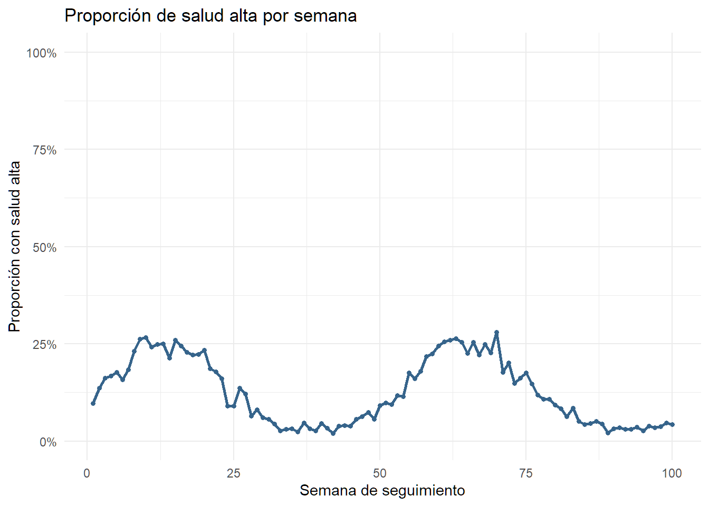
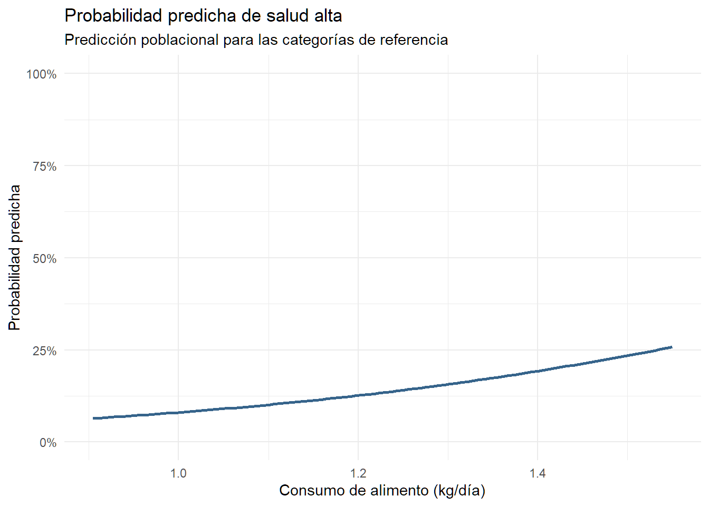

6.1 Diferencia entre un modelo lineal mixto y un GLMM
El modelo lineal mixto utilizado en el bloque anterior es apropiado cuando la respuesta es cuantitativa continua y puede representarse razonablemente mediante una distribución normal alrededor de la media. El peso, expresado en kilogramos, es un ejemplo de este tipo de respuesta.
Un modelo lineal generalizado mixto, o GLMM, amplía esta estructura para respuestas que no son continuas ni normales. Algunos ejemplos son:
Respuestas binarias, como presencia o ausencia de una condición.
Conteos, como el número de visitas veterinarias.
Proporciones, como el número de animales enfermos entre los examinados.
Un GLMM combina tres elementos:
Una distribución para la respuesta, como binomial o Poisson.
Una función de enlace que relaciona la media con los predictores.
Efectos aleatorios para representar la agrupación y las mediciones repetidas.
Para una respuesta binaria utilizaremos una distribución binomial y un enlace logit. El modelo se expresa como:
[ ( ) = +* 1X*{1ijk} + + u_k+b{jk} ]
La cantidad (p_{ijk}) es la probabilidad de que la observación presente el resultado de interés. El término (p/(1-p)) corresponde a las odds, y su logaritmo es el logit.
6.2 Construcción de una respuesta binaria
La base contiene una puntuación de salud de 0 a 4. Para fines didácticos construiremos una respuesta binaria denominada salud_alta_bin, que tomará el valor 1 cuando la puntuación sea igual o superior a 3 y el valor 0 cuando sea inferior a 3.
Este punto de corte es una decisión didáctica. En una investigación real debería definirse mediante criterios clínicos, productivos o previamente establecidos, y no seleccionarse después de observar los resultados.
Código
library(readxl)library(tidyverse)library(corrplot)library(naniar)library(lmerTest)library(lme4)library(broom.mixed)# Consultar la carpeta de trabajo.getwd()
[1] "C:/Users/Usuario/OneDrive - Universitat de les Illes Balears/Documentos/2026/Mexico/Mexico/modulos"
Código
# Nombre del archivo Excel.archivo <-"../datos/base_borregos_espaciotemporal_Hidalgo.xlsx"# Consultar las hojas disponibles.excel_sheets(archivo)
Si salud_score_0_4 ya fuera numérica, también podríamos construir la respuesta directamente con if_else(salud_score_0_4 >= 3, 1, 0). La conversión utilizada aquí permite trabajar con una variable almacenada como factor ordinal.
6.3 Frecuencia y evolución de la respuesta binaria
Antes de ajustar el modelo debemos comprobar cuántos ceros y unos existen. Una respuesta extremadamente desequilibrada puede dificultar la estimación.
Código
resumen_salud_binaria <- datos_glmm |>count(salud_alta_bin, name ="n") |>mutate(porcentaje =100* n /sum(n) )resumen_salud_binaria
# A tibble: 2 × 3
salud_alta_bin n porcentaje
<dbl> <int> <dbl>
1 0 43000 87.3
2 1 6249 12.7
Calcularemos también la proporción semanal de mediciones con salud alta.
Código
salud_alta_semana_glmm <- datos_glmm |>group_by(tiempo) |>summarise(n =n(),casos =sum(salud_alta_bin),proporcion =mean(salud_alta_bin),.groups ="drop" )ggplot( salud_alta_semana_glmm,aes(x = tiempo, y = proporcion)) +geom_line(color ="steelblue4", linewidth =0.9) +geom_point(color ="steelblue4", size =1.3) +scale_y_continuous(labels = scales::percent_format(accuracy =1),limits =c(0, 1) ) +labs(title ="Proporción de salud alta por semana",x ="Semana de seguimiento",y ="Proporción con salud alta" ) +theme_minimal()

Las proporciones semanales describen los datos, pero no ajustan por las características de los animales ni consideran que un mismo animal contribuye con varias mediciones.
6.4 Regresión logística convencional como punto de partida
Antes del modelo mixto, ajustaremos una regresión logística convencional. Este modelo utiliza una distribución binomial y un enlace logit, pero todavía considera todas las filas como independientes.
Call:
glm(formula = salud_alta_bin ~ consumo_c + edad_inicio_c + sexo +
raza + tiempo_c, family = binomial(link = "logit"), data = datos_glmm)
Coefficients:
Estimate Std. Error z value Pr(>|z|)
(Intercept) -1.8742551 0.0330091 -56.780 < 2e-16 ***
consumo_c 2.3462157 0.0860975 27.251 < 2e-16 ***
edad_inicio_c -0.0328107 0.0026433 -12.413 < 2e-16 ***
sexoMacho -0.0447218 0.0276644 -1.617 0.10597
razaRaza_B -0.2290086 0.0436448 -5.247 1.55e-07 ***
razaRaza_C 0.2209249 0.0424855 5.200 1.99e-07 ***
razaRaza_D -0.4500073 0.0453356 -9.926 < 2e-16 ***
razaRaza_E -0.1210304 0.0469438 -2.578 0.00993 **
tiempo_c -0.0067435 0.0004913 -13.725 < 2e-16 ***
---
Signif. codes: 0 '***' 0.001 '**' 0.01 '*' 0.05 '.' 0.1 ' ' 1
(Dispersion parameter for binomial family taken to be 1)
Null deviance: 37471 on 49248 degrees of freedom
Residual deviance: 36290 on 49240 degrees of freedom
AIC: 36308
Number of Fisher Scoring iterations: 5
Los coeficientes se encuentran en la escala logit, es decir, en log-odds. Esta escala es útil para construir el modelo, pero suele ser poco intuitiva para la interpretación aplicada.
El argumento family = binomial(link = "logit") indica que la respuesta es binaria y que se modela el logaritmo de las odds. Los términos aleatorios representan diferencias persistentes en la propensión a presentar salud alta entre granjas y entre animales.
El optimizador bobyqa y el aumento de maxfun pueden ayudar en modelos que requieren más iteraciones. No deben utilizarse para ocultar problemas estructurales: si aparecen advertencias de convergencia, debemos revisar los datos y la complejidad del modelo.
6.6 Efectos fijos y odds ratios
En una regresión logística, los coeficientes están expresados en log-odds. Al exponenciarlos obtenemos odds ratios:
[ OR = () ]
Un odds ratio mayor que 1 indica que las odds del resultado aumentan. Un valor menor que 1 indica que disminuyen. Un valor igual a 1 indica ausencia de cambio en las odds.
Para consumo_c, el OR representa el cambio multiplicativo en las odds de salud alta por 1 kg/día adicional de consumo, manteniendo constantes las demás variables y condicionando por los efectos aleatorios.
Para edad_inicio_c, representa el cambio en las odds por un mes adicional de edad inicial.
Para tiempo_c, representa el cambio en las odds por una semana adicional.
Para sexo y raza, compara cada categoría con la categoría de referencia.
Por ejemplo, un OR de 1,20 representa odds 20 % mayores, mientras que un OR de 0,80 representa odds 20 % menores. Esta interpretación se refiere a las odds, no directamente a la probabilidad.
Podemos añadir una columna con el cambio porcentual en las odds.
Un cambio porcentual negativo indica una reducción de las odds. Debemos informar siempre la categoría de referencia y la unidad de incremento de las variables continuas.
La línea vertical se sitúa en OR = 1, que corresponde a ausencia de asociación en la escala de las odds. La escala logarítmica representa de forma simétrica los incrementos y las reducciones multiplicativas.
6.8 Efectos aleatorios del GLMM
Los componentes aleatorios describen la variabilidad entre granjas y animales en la propensión basal a presentar salud alta.
# A tibble: 2 × 6
effect group term estimate conf.low conf.high
<chr> <chr> <chr> <dbl> <dbl> <dbl>
1 ran_pars animal_granja sd__(Intercept) 0.134 NA NA
2 ran_pars granja_id sd__(Intercept) 0.103 NA NA
Código
VarCorr(modelo_glmm)
Groups Name Std.Dev.
animal_granja (Intercept) 0.13367
granja_id (Intercept) 0.10267
Una varianza elevada del intercepto de animal indica diferencias importantes entre animales que no quedan explicadas por consumo, edad, sexo, raza y semana. Una varianza elevada de granja indica diferencias persistentes entre explotaciones.
En un modelo logístico no se estima una varianza residual en la misma forma que en un modelo lineal. La variabilidad de nivel individual está vinculada a la distribución binomial. Por ello, los componentes de varianza no deben compararse directamente con los de un modelo lineal mixto.
6.9 Probabilidades predichas
Las probabilidades suelen ser más intuitivas que las log-odds. Calcularemos predicciones poblacionales para diferentes niveles de consumo, manteniendo las variables restantes en valores de referencia.
ggplot( nuevos_datos_glmm,aes(x = consumo_kg_dia, y = probabilidad)) +geom_line(color ="steelblue4",linewidth =1 ) +scale_y_continuous(labels = scales::percent_format(accuracy =1),limits =c(0, 1) ) +labs(title ="Probabilidad predicha de salud alta",subtitle ="Predicción poblacional para las categorías de referencia",x ="Consumo de alimento (kg/día)",y ="Probabilidad predicha" ) +theme_minimal()

La curva muestra cómo cambia la probabilidad predicha con el consumo para un animal de las categorías de referencia, con edad inicial y semana centradas en sus promedios. Como re.form = NA, la predicción no incorpora desviaciones específicas de animales o granjas.
6.10 Diferencia entre odds y probabilidad
La probabilidad y las odds están relacionadas, pero no son equivalentes:
Un mismo odds ratio puede producir cambios de probabilidad diferentes según la probabilidad inicial. Por esta razón, conviene presentar los odds ratios junto con probabilidades predichas en escenarios relevantes.
6.11 Comparación entre el modelo logístico y el GLMM
Podemos comparar las estimaciones del modelo que ignora la agrupación y del modelo mixto.
Las diferencias entre ambos modelos pueden aparecer tanto en los odds ratios como en sus errores estándar. El GLMM condiciona la interpretación a las diferencias aleatorias entre animales y granjas y representa la correlación de las observaciones agrupadas.
El (R^2) marginal resume la contribución de los efectos fijos. El (R^2) condicional incorpora también la variabilidad asociada con animales y granjas. En un GLMM estas medidas son aproximaciones y no deben interpretarse exactamente como el (R^2) de una regresión lineal convencional.
6.13 Comprobación de convergencia y singularidad
Código
modelo_glmm@optinfo$conv$lme4$messages
NULL
Código
isSingular( modelo_glmm,tol =1e-4)
[1] FALSE
Código
performance::check_singularity(modelo_glmm)
[1] FALSE
Si no aparecen mensajes de convergencia y el modelo no es singular, el ajuste numérico es una señal favorable, aunque no garantiza que el modelo sea científicamente adecuado. También debemos revisar la codificación de la respuesta, las categorías poco frecuentes, la separación y la complejidad de la estructura aleatoria.
6.14 Predicciones observadas y predichas por semana
Como comprobación descriptiva, compararemos la proporción observada de salud alta y la probabilidad media predicha en cada semana.
La predicción condicional incorpora la información específica de los animales y granjas observados. La predicción poblacional utiliza únicamente los efectos fijos. Por ello, la primera puede reproducir más estrechamente los datos utilizados para ajustar el modelo.
6.15 Limitaciones del GLMM binario
La transformación de una puntuación ordinal de 0 a 4 en una respuesta binaria simplifica el análisis, pero también elimina información. Las puntuaciones 0, 1 y 2 quedan agrupadas, al igual que las puntuaciones 3 y 4.
Si la escala ordinal tiene significado científico, un modelo ordinal mixto podría ser más apropiado. La elección entre un análisis binario y uno ordinal debe basarse en la pregunta científica y en la definición del resultado, no únicamente en la facilidad del análisis.
El modelo supone además que el cambio temporal es lineal en la escala logit y que los efectos del consumo, la edad y la semana son iguales para todos los animales. También supone que la estructura aleatoria de interceptos representa suficientemente la dependencia. Estas hipótesis deben revisarse y justificarse.
6.16 Resumen de interpretación del GLMM
Para comunicar un modelo logístico mixto conviene indicar:
Cómo se definió el resultado binario y cuál es el evento codificado como 1.
Qué distribución y función de enlace se utilizaron.
Cuáles fueron los efectos fijos incluidos.
Qué unidades se representaron mediante efectos aleatorios.
Cuáles son las categorías de referencia.
Los odds ratios y sus intervalos de confianza.
Probabilidades predichas para escenarios interpretables.
Los componentes de varianza y la importancia de la agrupación.
Los resultados de convergencia y singularidad.
Las limitaciones de convertir una respuesta ordinal en binaria.
¿Por qué un modelo lineal mixto no es adecuado para una respuesta 0/1?
¿Qué criterio se utilizó para construir salud_alta_bin?
¿Qué proporción de las mediciones presenta salud alta?
¿Cuál es el evento modelado por glmer()?
¿Qué representa el enlace logit?
¿Cómo se interpreta el OR del consumo?
¿Cómo se interpreta un OR asociado con una categoría de raza?
¿Cuál es la categoría de referencia para sexo y raza?
¿Qué diferencia existe entre odds y probabilidad?
¿Por qué un OR de 2 no significa que la probabilidad se duplique necesariamente?
¿Qué representan los interceptos aleatorios de animal y granja?
¿Cambian los resultados respecto a la regresión logística convencional?
¿Cuál es la diferencia entre una predicción poblacional y una condicional?
¿El modelo presenta problemas de convergencia o singularidad?
¿Qué información se pierde al convertir la puntuación ordinal en binaria?
Al finalizar estos bloques debemos comprender por qué las mediciones repetidas requieren métodos que representen su dependencia. El modelo lineal mixto permite analizar una respuesta continua, como el peso, incorporando diferencias entre animales y granjas. El GLMM amplía esta estructura para respuestas no continuas, como una condición binaria de salud.
Los efectos fijos resumen asociaciones promedio, mientras que los efectos aleatorios describen variabilidad entre las unidades agrupadas. En la regresión logística mixta, los coeficientes pueden transformarse en odds ratios, pero su interpretación debe complementarse con probabilidades predichas y con una descripción clara de las categorías de referencia y del evento analizado.